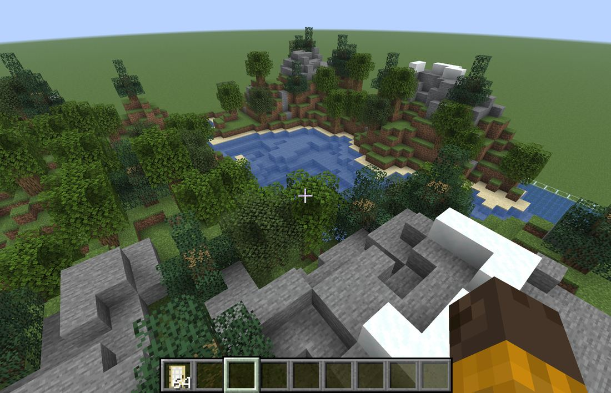
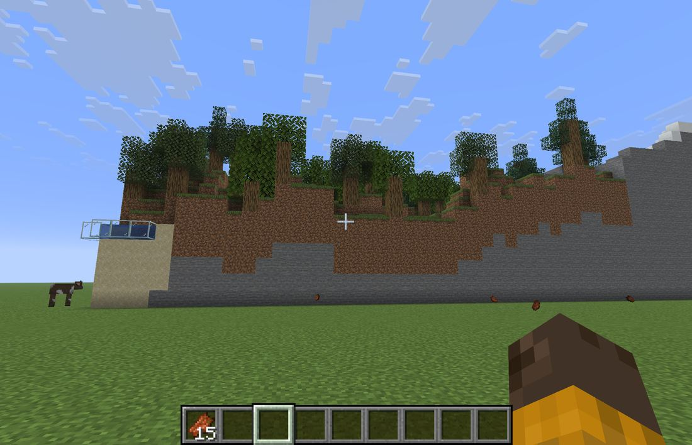
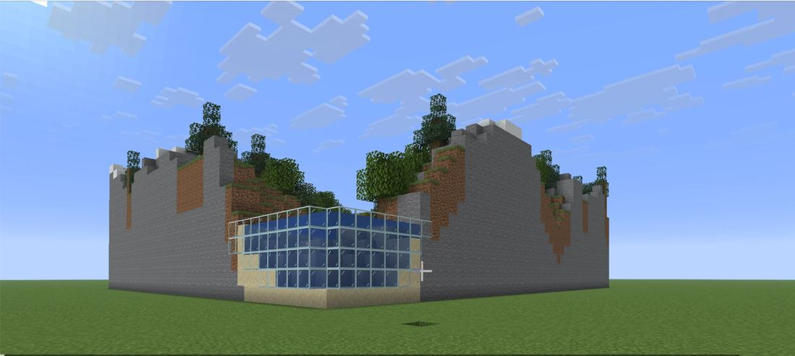
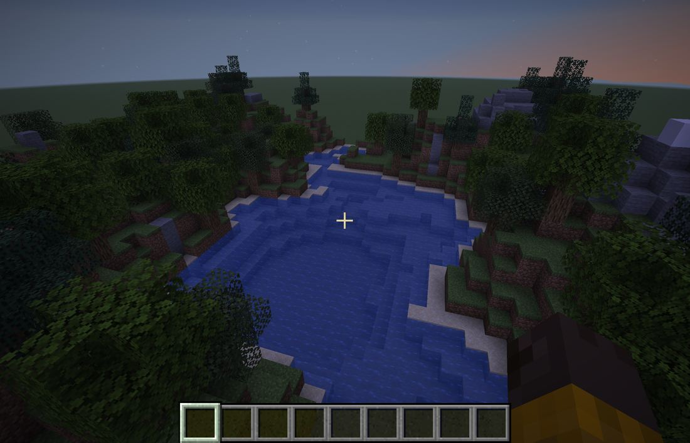

← マインクラフトで試してみた (1 / 3)
地形は「山と湖」、季節は「夏」を選び、/function voxel:build で置いた記録です。

湖、岸の砂、草の斜面、林、雪ののった石の山が、ボクセル工房の画面と同じ並びで置かれました。水は湖の形におさまり、木の葉も残りました。

風景は、地面の上に台のようにのります。地面に立って見ると、まわりが土と石の高い壁になりました。歩いては登れないので、空を飛んで中に入りました。

水がふちにある所には、ガラスが立ちます。水は外に流れ出しませんでした。近くで見ると、ガラスの枠の線が見えます。

夕方や夜は、全体が暗く写ります。色を見比べたいときは、昼にします。チャットの欄に /time set day と打つと、昼になります。